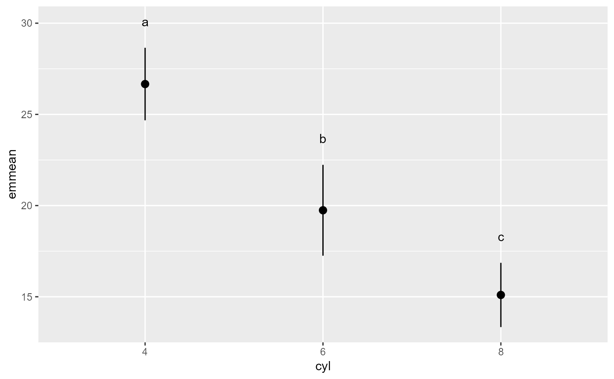

This calculates and displays means, confidence intervals as well as which groups are different based on Tukey's HSD. Inspired by http://stackoverflow.com/questions/18771516/is-there-a-function-to-add-aov-post-hoc-testing-results-to-ggplot2-boxplot
TukeyHSDgg(x, y, d, ci = 0.95, idvar, ...)| x | A categorical grouping variable name. |
|---|---|
| y | A continuous outcome variable name. |
| d | A dataset |
| ci | A numeric value indicating the coverage of the confidence interval to use. Defaults to 0.95. |
| idvar | An optional ID variable for multilevel data |
| ... | Additional arguments passed on. |
A ggplot graph object.
## examples using it with single level data
## differences based on an ANOVA and follow up contrasts
mtcars$cyl <- factor(mtcars$cyl)
TukeyHSDgg("cyl", "mpg", mtcars)

rm(mtcars)
if (FALSE) {
TukeyHSDgg("Species", "Sepal.Length", iris)
## example based on multilevel data
## differences based on model fit with lmer and follow up contrasts
TukeyHSDgg("treatment", "decrease", OrchardSprays, idvar = "colpos")
}